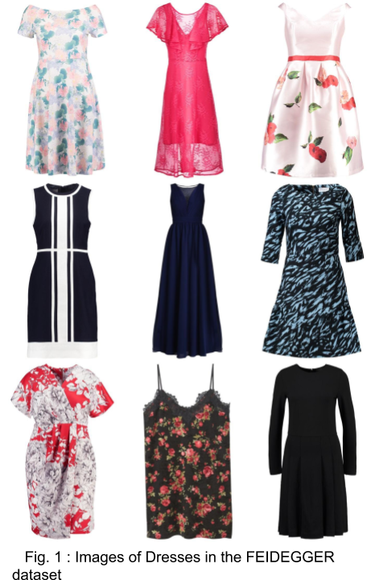

<!DOCTYPE html>
<html lang="en-US">
  <head>
    <meta charset="utf-8" />
    <meta name="viewport" content="width=device-width, initial-scale=1" />
    <meta http-equiv="X-UA-Compatible" content="IE=edge" />
    <meta name="theme" content="hugo-academic-group" />

     

    <script src="https://ajax.googleapis.com/ajax/libs/jquery/1.12.4/jquery.min.js"></script>
    <script src="https://research.zalando.com//js/hugo-academic-group.js"></script>

    <link rel="stylesheet" href="https://research.zalando.com//css/bootstrap.min.css" />
    <script src="https://research.zalando.com//js/bootstrap.min.js"></script>

    <link
      rel="stylesheet"
      href="//cdnjs.cloudflare.com/ajax/libs/highlight.js/10.6.0/styles/default.min.css"
    />
    <script src="//cdnjs.cloudflare.com/ajax/libs/highlight.js/10.6.0/highlight.min.js"></script>

    <link
      rel="stylesheet"
      href="https://cdnjs.cloudflare.com/ajax/libs/github-fork-ribbon-css/0.2.2/gh-fork-ribbon.min.css"
    />

    
    <script src="https://research.zalando.com//js/highlight.pack.js"></script>
    <script>
      hljs.initHighlightingOnLoad();
    </script>

    <link
      rel="stylesheet"
      href="https://research.zalando.com//css/font-awesome.min.css"
    />
    <link rel="stylesheet" href="https://research.zalando.com//css/academicons.min.css" />
    <link
      rel="stylesheet"
      href="//fonts.googleapis.com/css?family=Lato:100,300,400,700|Merriweather:100,400,700|Roboto+Mono"
    />
    <link
      rel="stylesheet"
      href="https://research.zalando.com//css/hugo-academic-group.css"
    />

    

    <link
      rel="shortcut icon"
      href="https://research.zalando.com//img/favicon.ico"
      type="image/x-icon"
    />
    <link rel="canonical" href="https://research.zalando.com/project/feidegger_dataset/feidegger_dataset/" />

    <title>Feidegger Dataset | Zalando Research</title>
  </head>

  <body>
    <div class="home-anchor" id="home"></div>
  </body>
</html>


<nav class="navbar navbar-default navbar-fixed-top" id="navbar-main">
    <div class="container">

        
        <div class="navbar-header">
            <button type="button" class="navbar-toggle collapsed" data-toggle="collapse" data-target=".navbar-collapse" aria-expanded="false">
                <span class="sr-only">Toggle navigation</span>
                <span class="icon-bar"></span>
                <span class="icon-bar"></span>
                <span class="icon-bar"></span>
            </button>

            <div class="navbar-brand">
                
                    <a class="logo" href="https://research.zalando.com/">
                        </img>
                    </a>
                
                
            </div>
        </div>

        
        <div class="collapse navbar-collapse" id="#navbar-collapse-1">

            
            <ul class="nav navbar-nav navbar-right">
                
                    
                        <li class="nav-item"><a data-scroll href="https://research.zalando.com/#top">Home</a></li>
                    
                
                    
                        <li class="nav-item"><a data-scroll href="https://research.zalando.com/research">Research</a></li>
                    
                
                    
                        <li class="nav-item"><a data-scroll href="https://research.zalando.com/#publications">Publications</a></li>
                    
                
                    
                        <li class="nav-item"><a data-scroll href="https://research.zalando.com/#projects">Projects</a></li>
                    
                
                    
                        <li class="nav-item"><a data-scroll href="https://research.zalando.com/#members">Members</a></li>
                    
                
                    
                        <li class="nav-item"><a data-scroll href="https://research.zalando.com/#posts">Blog</a></li>
                    
                
                    
                        <li class="nav-item"><a data-scroll href="https://research.zalando.com/#contact">Contact</a></li>
                    
                
                
            </ul>

        </div>
    </div>
</nav>

<div class="container">
    

    <article class="article article-project" itemscope itemtype="http://schema.org/Article">
        <h1 itemprop="name">Feidegger Dataset</h1>
        
        

        

        <div class="article-style" itemprop="articleBody">
            <h3 id="research-project-byleonidas-lefakis-ex-member-alan-akbik-ex-member-roland-vollgrafmemberroland_v">Research Project by Leonidas Lefakis (ex-member), Alan Akbik (ex-member) &amp; <a href="https://research.zalando.com/member/roland_v">Roland Vollgraf</a></h3>
<p><!-- raw HTML omitted -->The FEIDEGGER (fashion images and descriptions in German) dataset is a new multi-modal corpus that focuses specifically on the domain of fashion items and their visual descriptions in German. The dataset was created as part of ongoing research at Zalando into text-image multi-modality in the area of fashion.<!-- raw HTML omitted --></p>
<p><!-- raw HTML omitted -->Unlike other tasks typically encountered in multi-modal learning, in fashion the informative information in the visual data often consists of very fine-grained details that needs to be reflected in the textual descriptions. Furthermore in order to generate such detailed descriptions, users must often rely on a domain-specific vocabulary. These particularities make the creation of a multi-modal fashion-related dataset a challenging task.<!-- raw HTML omitted --></p>
<p>In order to create FEIDEGGER we leveraged crowd-sourcing while developing a novel annotation and assessment pipeline in order to ensure the high-quality of the final dataset. The pipeline and motivation behind various design decisions can be found in our <!-- raw HTML omitted --><a href="http://www.lrec-conf.org/proceedings/lrec2018/pdf/319.pdf">published work</a><!-- raw HTML omitted --><!-- raw HTML omitted -->.<!-- raw HTML omitted --></p>
<p></p>
<p><!-- raw HTML omitted -->The dataset itself consists of 8732 high-resolution images, each depicting a dress from the available on the Zalando shop against a white-background, as shown in Figure 1. For each of the images we provide five textual annotations in German, each of which has been generated by a separate user. An example of the resulting multi-modal data can be seen in the Figure 2 (note the English translations do not form part of the dataset).<!-- raw HTML omitted --></p>
<p>Create Mosaic of Dresses….</p>
<p>
<!-- raw HTML omitted -->   Fig. 2 : Example of Image of dress and corresponding textual descriptions<!-- raw HTML omitted --></p>

        </div>
    
        
     </article>
    
   <nav>
    <ul class="pager">
        
        <li class="previous">
            <a href="https://research.zalando.com/project/flair_nlp/flair_nlp/">
                <span aria-hidden="true" class="darknav">&larr;&nbsp;Previous project:</span>
                Flair
            </a>
        </li>
        

        
        <li class="next">
            <a href="https://research.zalando.com/project/determinantal_point_processes/determinantal_point_processes/">
                <span class="darknav">&nbsp;Next project:</span>
                Determinantal Point Processes
                <span aria-hidden="true" class="darknav">&rarr;</span>
            </a>
        </li>
        
    </ul>
</nav>


</div>

<footer class="site-footer">
    <div class="container">
        <p class="powered-by">

            <a href="https://research.zalando.com/imprint">Imprint</a>  ·  <a href="https://research.zalando.com/privacy">Privacy Policy</a>   ·  © Zalando SE, 2021 &middot; 

            Partially powered by the <a href="https://github.com/gcushen/hugo-academic" target="_blank">Academic theme</a> for <a href="http://gohugo.io" target="_blank">Hugo</a>.

            <span class="pull-right"><a href="#home" id="back_to_top"><span class="button_icon"><i class="fa fa-chevron-up fa-2x" aria-hidden="true"></i></span></a></span>

        </p>
    </div>
</footer>

<script src="//cdnjs.cloudflare.com/ajax/libs/gsap/1.18.4/TweenMax.min.js"></script>
<script src="//cdnjs.cloudflare.com/ajax/libs/gsap/latest/plugins/ScrollToPlugin.min.js"></script>


<script>
        MathJax = {
          tex: {
            inlineMath: [['$', '$'], ['\\(', '\\)']],
            displayMath: [['$$','$$'], ['\\[', '\\]']],
            processEscapes: true,
            processEnvironments: true
          },
          options: {
            skipHtmlTags: ['script', 'noscript', 'style', 'textarea', 'pre']
          }
        };
        </script>

<script src="https://polyfill.io/v3/polyfill.min.js?features=es6"></script>
<script id="MathJax-script" async src="https://cdn.jsdelivr.net/npm/mathjax@3/es5/tex-mml-chtml.js"></script>

</body>
</html>

